By George Zou and Peter Brinson
Disclaimer: this is a draft. You are welcome to ask Peter or George any questions.
0. Introduction
Now that we have learned how to build a basic interactable, let’s see if we can build a more complex puzzle using it. Hopefully, it can be helpful to making an Entrant game.
Here’s the idea of the puzzle we’ll build in this tutorial: A door is locked. Two colored boxes sit in the room, and two colored pads sit on the floor. Player needs to put the corresponding colored box onto the colored pad to unlock the door. If the player removes a box from a pad, the door closes again.
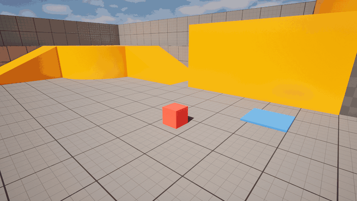
Learning Objectives:
- Highlight whatever the player is looking at with an outline (Custom Depth and a post-process material)
- Create child Blueprints that inherit hover, UI, and interaction from
BP_Interactable_Base - Carry a physics object in front of the camera with a Physics Handle, the way Portal does
- Snap a carried object onto a pad, and take it back, with Attach Component To Component
- Match objects to pads with an Enumeration and color them in the Construction Script
- Open a door when every pad is solved, using an Event Dispatcher and a Timeline
Chapter A: Prepare the 821 System
A0. Check the Component Hierarchy
Open BP_Interactable_Base. In Components, make sure InteractRadius and the tip widget are both children of Mesh_Interactable. If either is attached to DefaultSceneRoot, drag it onto the mesh.
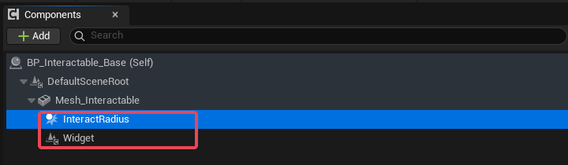
The box you build later simulates physics. A physics object moves away from the actor’s root, and only the components parented under it come along. If the radius stays behind, the box stops being interactable once you carry it somewhere.
A1. Count Overlaps Instead of Toggling
In 821, entering any interact radius turns the trace on, and leaving any radius turns it off. That works with one interactable. In this tutorial the boxes and pads sit close together, so the player is often inside two radii at once. Step out of one and the trace stops, even though you are still standing next to the other.
The fix is to count how many radii the player is inside.
In InteractionComponent, add an Integer variable named OverlapCount.
In the On Interactable Overlap event, replace the existing logic with:
- Branch on
bIsOverlapped - True: set
OverlapCounttoOverlapCount + 1 - False: set
OverlapCountto Max of (OverlapCount - 1,0) - Both paths continue into one Draw Trace call. Plug
OverlapCount > 0intobIsDrawTrace.
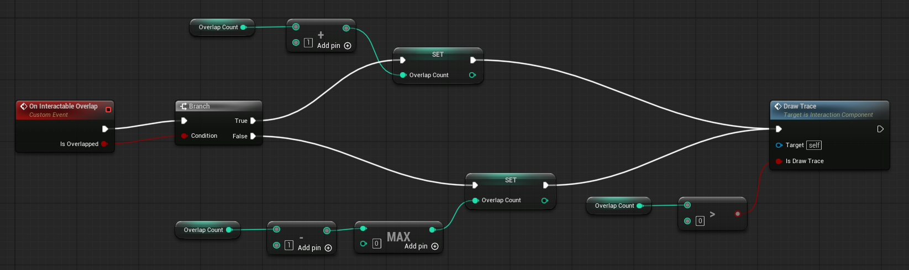
The Max with 0 is a safety net. If an End Overlap ever fires without a matching Begin Overlap, the count can’t go negative.
A2. Show “E” in the Hover Tip
Open WB_InteractionTip. Inside the Canvas Panel, add a Text widget. Set its text to E, size around 36, and center it on the image from 821. You can delete the image if you prefer just the letter.
To keep the letter readable against any background, open Details → Font → Outline Settings and set Outline Size to 2.
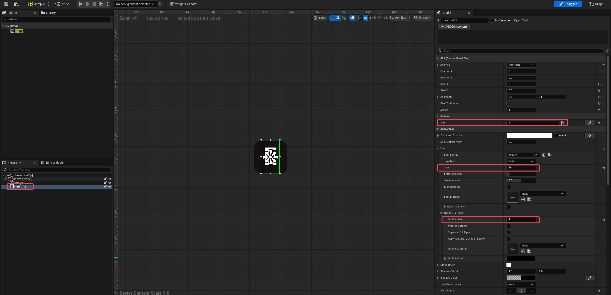
Save All
A3. Optionally, Create the Outline Material
NOTE: This part is totally optional, and beginners might find it slightly advanced. Having an outline to show something is interactable will add juice to the puzzle, but this is not a must.
The outline is a post-process effect. Any mesh that has Render Custom Depth turned on gets drawn into a hidden buffer. A post-process material finds the edges of that buffer and paints a line around them.
First, check Project Settings → Rendering → Postprocessing → Custom Depth-Stencil Pass. It should be Enabled.
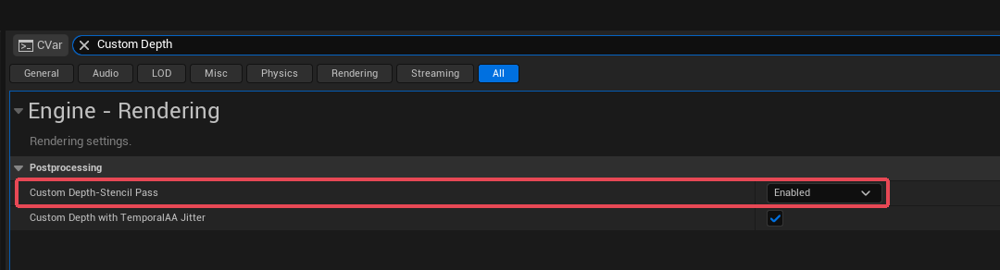
Right-click in the Content Browser, create a Material, and name it M_PP_Outline. Open it. In Details, set Material Domain to Post Process.
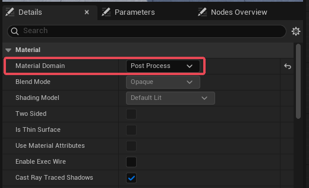
Now build the edge detection. For each pixel, the material asks two questions. Is this pixel outside the object? Is a neighboring pixel inside it? If both answers are yes, the pixel is on the outline.
- Add a ScreenPosition node. Its
ViewportUVoutput is the current pixel. - Add a ViewSize node and Divide
1by it. This gives the size of one pixel. Multiply that by a Scalar Parameter namedThickness(default2). - Create four Constant2Vector nodes:
(1, 0),(-1, 0),(0, 1),(0, -1). Multiply each by the result of step 2, then Add each toViewportUV. These are the four neighboring pixels. - Add five SceneTexture nodes and set each one’s Scene Texture Id to
CustomDepth. WireViewportUVinto the first one’sUVs. Wire the four neighbors from step 3 into the other four. - Take the R output of the four neighbor nodes and combine them with three Min nodes into one value. This is the nearest depth around the pixel.
- Add two If nodes, each with
B = 5000:- The first gets
A= the nearest neighbor depth from step 5, withA < Bset to1and the other two outputs set to0. It answers “is a neighbor inside an object?” - The second gets
A= the center pixel’s depth (the first SceneTexture’s R), withA > BandA == Bset to1andA < Bset to0. It answers “is this pixel outside an object?”
- The first gets
- Multiply the two If results. The product is
1on the outline and0everywhere else. - Add one more SceneTexture node set to
PostProcessInput0. This is the normal rendered image. - Lerp with
A=PostProcessInput0Color,B= a Vector Parameter namedOutlineColor(white, or any color you like), and Alpha = the result of step 7. Wire the Lerp into Emissive Color.
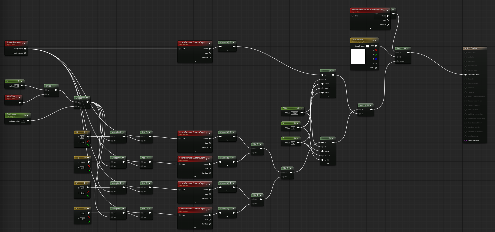
Pixels with nothing drawn into Custom Depth report a huge depth value, which is why 5000 (50 meters) works as the “inside or outside” threshold. If Unreal complains about mixing float3 and float4, add a Component Mask (R, G, B) after each color before the Lerp.
Save All
A3.5. Turn on the Outline
Drag a Post Process Volume into the level. In Details:
- Check Infinite Extent (Unbound) so it affects the whole level.
- Under Rendering Features → Post Process Materials, click +, choose Asset Reference, and pick
M_PP_Outline.
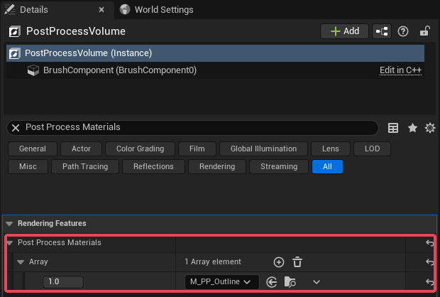
Back in BP_Interactable_Base, find the On Hovered and On UnHovered events from 821 B1. After the widget show/hide logic, drag in Mesh_Interactable and add Set Render Custom Depth. Check the box in On Hovered and leave it unchecked in On UnHovered.
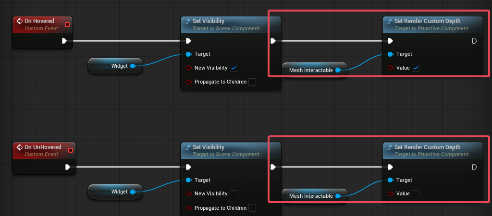
Test it. Look at your 821 cube: the outline and the “E” should appear together and disappear together.
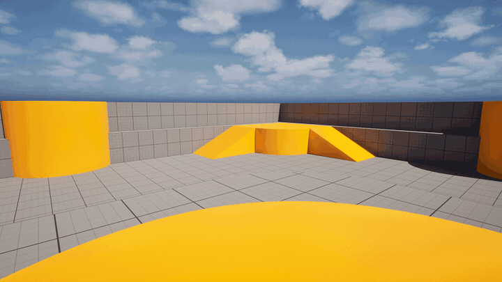
Because this lives in the base class, every child Blueprint you make from now on gets the outline and the “E” for free. That’s the point of the next two chapters.
Chapter B: Make a Box
B0. Create a Key Enumeration
A box and a pad match when they share a key. Color is just how the key looks to the player.
Right-click in the Content Browser → Blueprint → Enumeration. Name it E_PuzzleKey. Open it and add three entries: Red, Blue, Green.
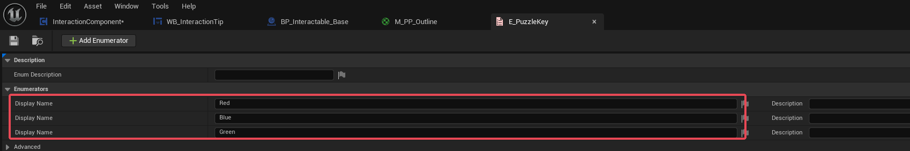
Because the logic compares keys instead of colors, you can later swap colors for shapes, symbols, or sounds without touching any of the matching logic.
B1. Create a Color Material
Create a Material named M_PuzzleColor. Add a Vector Parameter named Color and wire it into Base Color.
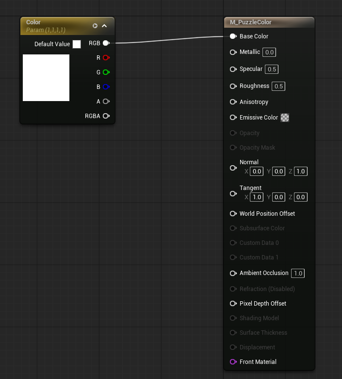
B2. Create the Box as a Child Blueprint
Right-click BP_Interactable_Base in the Content Browser and choose Create Child Blueprint Class. Name it BP_PuzzleBox.
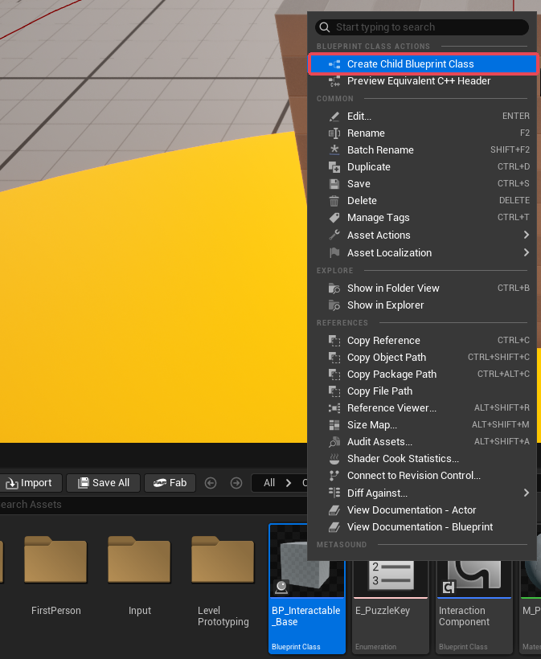
Open it. The components from 821 are already there. Inherited components can’t be renamed or reparented, but their Details can be changed.
Select Mesh_Interactable:
- Set Scale to
0.5, 0.5, 0.5. A full-size cube is a meter wide, too big to carry. - Under Physics, check Simulate Physics.
Select InteractRadius and double its Sphere Radius, since it shrank with the mesh.
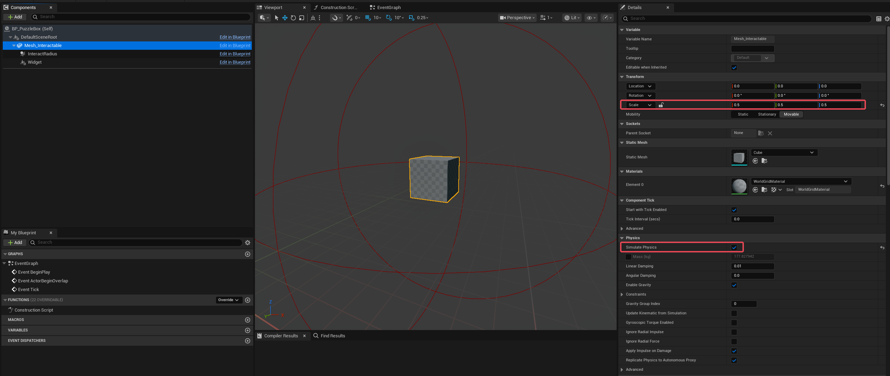
B3. Add Variables
In BP_PuzzleBox, add:
Key: type E_PuzzleKey. Click the eye icon to make it Instance Editable, so each box in the level can have its own key.
The box also needs to remember which pad it sits on, but the pad doesn’t exist yet. You’ll add that in D3.
B4. Color the Box in the Construction Script
Open the Construction Script tab. It runs in the editor every time you change the box, so the color updates as soon as you change Key.
- Drag in
Mesh_Interactableand add Create Dynamic Material Instance. Set Source Material toM_PuzzleColor. - From its Return Value, add Set Vector Parameter Value. Set Parameter Name to
Color. - Add a Select node. Wire
Keyinto its Index. The options fill in automatically, one per enum entry. Set Red, Blue, and Green colors. - Wire the Select output into Value.
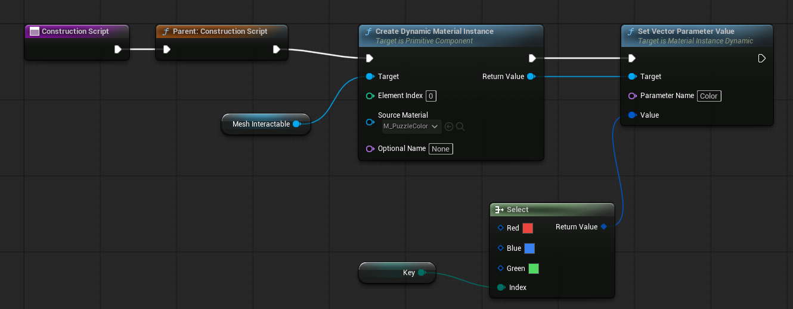
Drag two boxes into the level. Set one’s Key to Red and the other’s to Blue. They should change color in the editor right away.
B5. Three States for the Box
A box is always in one of three states:
- Loose: lying in the world. Physics on, and the trace can see it.
- Held: carried by the player. Physics on, but the trace can’t see it and it can’t bump the player.
- Snapped: sitting on a pad. Physics off, attached to the pad.
Make one custom event per state in BP_PuzzleBox.
To Held:
- Detach From Component on
Mesh_Interactable(Location, Rotation, Scale rules allKeep World) - Set Simulate Physics → true
- Set Collision Response to Channel: Channel
Visibility, ResponseIgnore - Set Collision Response to Channel: Channel
Pawn, ResponseIgnore
To Loose:
- Set Collision Response to Channel:
Visibility→Block - Set Collision Response to Channel:
Pawn→Block
To Snapped: add an input SnapPoint of type Scene Component.
- Set Simulate Physics → false
- Set Collision Response to Channel:
Visibility→Block - Set Collision Response to Channel:
Pawn→Block - Attach Component To Component: Target
Mesh_Interactable, ParentSnapPoint. Set Location and Rotation rules toSnap to Targetand the Scale rule toKeep World.
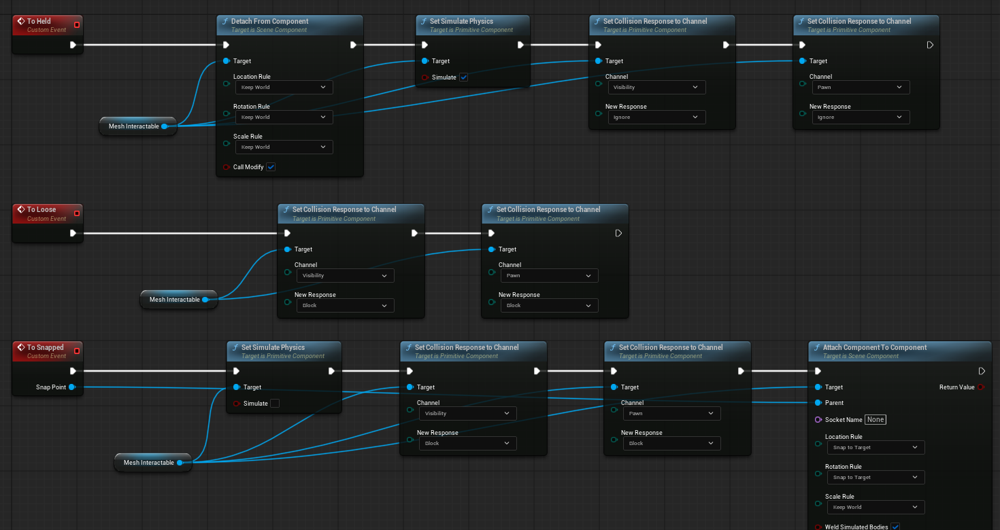
Why ignore Visibility while held? The 821 trace runs on the Visibility channel, and a carried box floats right in front of the camera. If the trace can see it, it hits the box you’re holding every time, and you can never look past it at a pad.
Save All
Chapter C: Carry the Box
C0. Add a Physics Handle
Open BP_FirstPersonCharacter. In Components, add a Physics Handle.
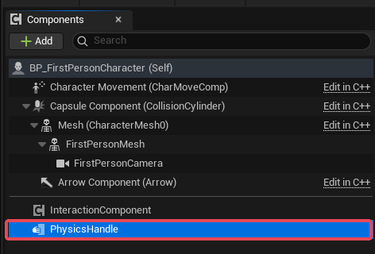
A Physics Handle holds a physics object toward a target point you set every frame. The box stays a real physics object while you carry it: it bumps into walls instead of passing through them, and it lags a little behind your view.
C1. Cache the Handle and Camera
Open InteractionComponent. Add three variables:
PhysicsHandle: Physics Handle Component (Object Reference)Camera: Camera Component (Object Reference)HeldBox: BP_PuzzleBox (Object Reference)
From Event BeginPlay: Get Owner → Get Component by Class (PhysicsHandleComponent) → Set PhysicsHandle. Do the same with CameraComponent → Set Camera.
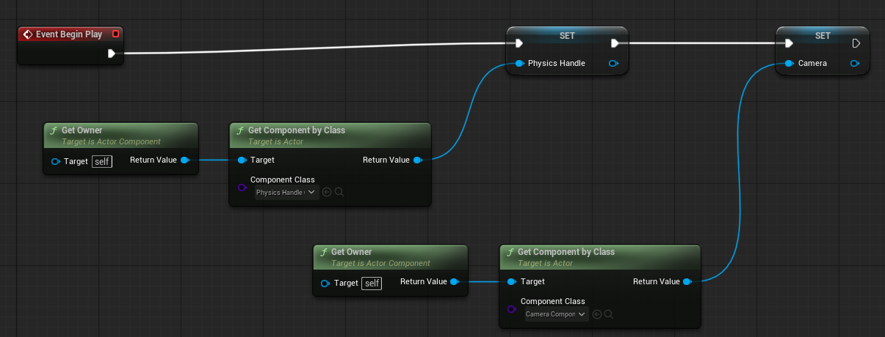
Like 821’s overlap logic, this keeps the carrying code inside InteractionComponent instead of the character. Remove the component and the whole system goes with it.
C2. Hold Box
In InteractionComponent, create a Function named Hold Box with an input Box (BP_PuzzleBox).
- Call To Held on
Box - From
PhysicsHandle, call Grab Component at Location with Rotation:- Component:
Box→Mesh_Interactable - Location:
Mesh_Interactable→ Get World Location - Rotation:
Mesh_Interactable→ Get World Rotation
- Component:
- Set
HeldBoxtoBox
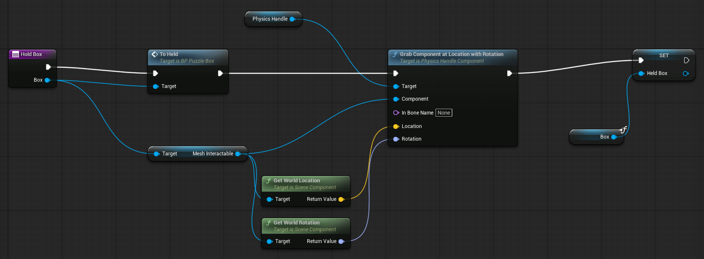
C3. Release Box
Create a second Function named Release Box. In its Details, add an Output named Box (BP_PuzzleBox).
- From
PhysicsHandle, call Release Component - Set the output
BoxtoHeldBox - Set
HeldBoxto nothing (leave the pin empty)
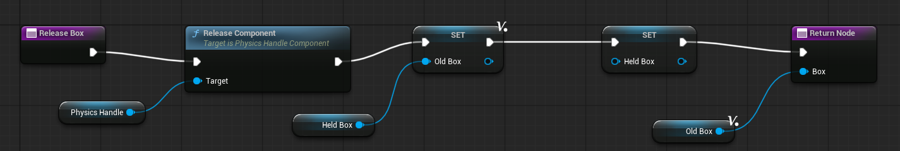
Release Box hands back the box it was holding, so whoever called it decides what happens next. Dropping it on the floor and snapping it onto a pad both start the same way.
C4. Move the Box Every Frame
Add a Float variable HoldDistance with a default of 150.
From Event Tick:
- Is Valid
HeldBox(the?node from 821) - Is Valid →
PhysicsHandle→ Set Target Location and Rotation:- Location:
CameraGet World Location + (CameraGet Forward Vector ×HoldDistance) - Rotation:
CameraGet World Rotation
- Location:
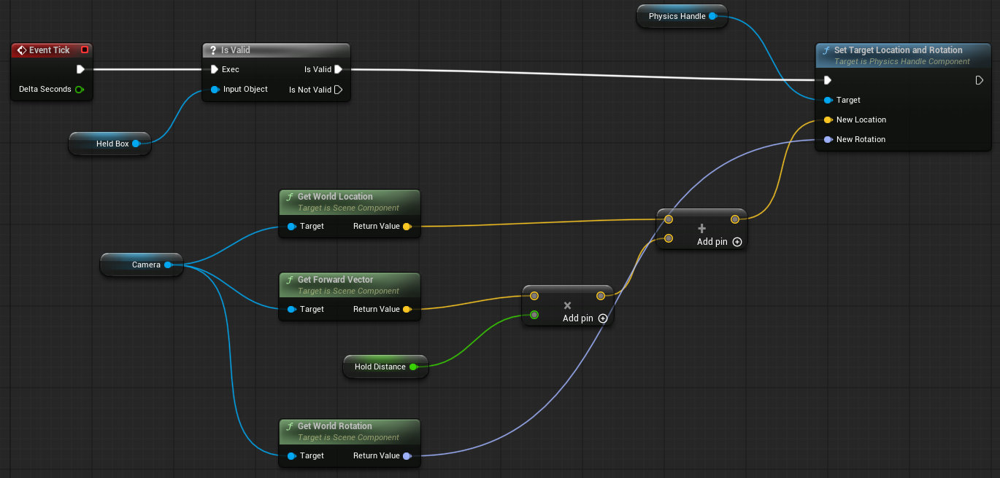
If the box wobbles or trails too far behind, select the PhysicsHandle in BP_FirstPersonCharacter and raise Linear Stiffness and Interpolation Speed.
C5. Pick Up on Interact
Open BP_PuzzleBox. In the Event Graph, right-click and search for Event Interact. This overrides the Interact event from the parent.
Character→ Get Component by Class (InteractionComponent) → Is Valid itsHeldBox- Is Not Valid (hands are empty): call Hold Box on the InteractionComponent with
Box= Self - Is Valid (already carrying something): do nothing
- Is Not Valid (hands are empty): call Hold Box on the InteractionComponent with
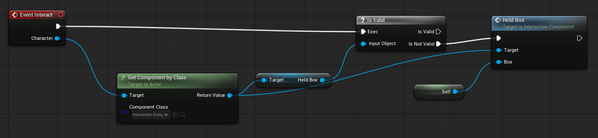
If you added a Print String to the base Interact event in 821 C2, it no longer fires for boxes. Right-click Event Interact → Add Call to Parent Function if you want to keep it.
C6. Drop with E
Back in InteractionComponent, find the E key logic from 821 C2. Its Branch on bCanInteract has nothing on the False pin. Add:
- Is Valid
HeldBox→ Is Valid → Release Box → call To Loose on the returnedBox
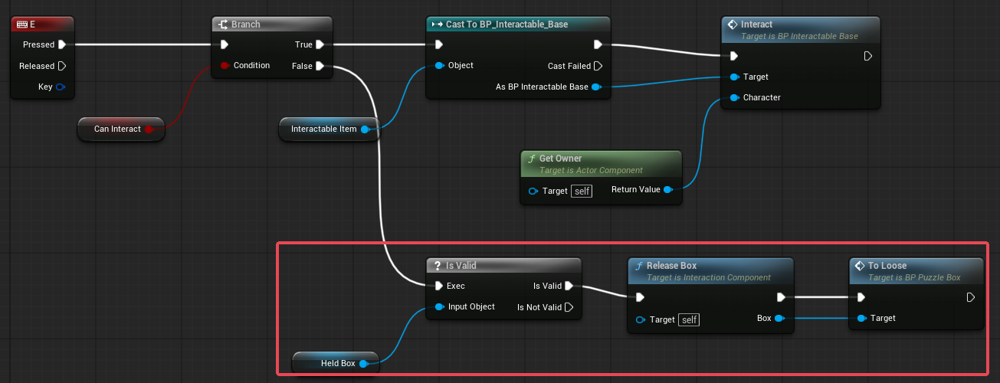
Pressing E while looking at nothing now drops the box.
Save All
Test it: look at a box, press E, walk around, look at empty floor, press E.
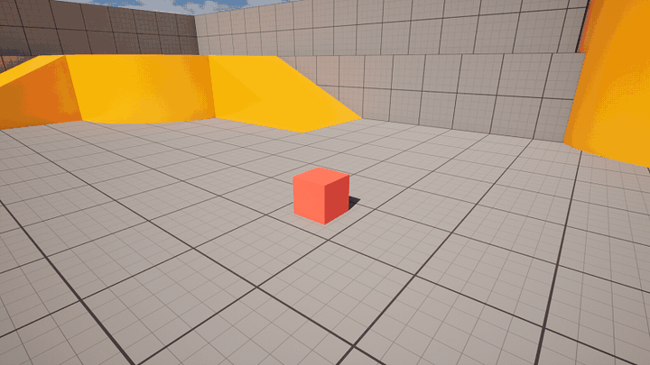
Chapter D: Make a Placement Pad
D0. Create the Pad as a Child Blueprint
Create another child of BP_Interactable_Base and name it BP_PlacementPad.
Select Mesh_Interactable and set Scale to 1.2, 1.2, 0.05. This makes a flat square on the floor. Set its material to M_PuzzleColor.
Squashing the mesh squashes its children too. Fix both inherited children:
InteractRadius: set Scale to1, 1, 20. A sphere uses its smallest scale axis, so without this the radius shrinks to almost nothing.- The tip widget: raise its Location Z until the “E” floats about a meter above the pad. Its location is now multiplied by
0.05, so the number will look large (around2000).
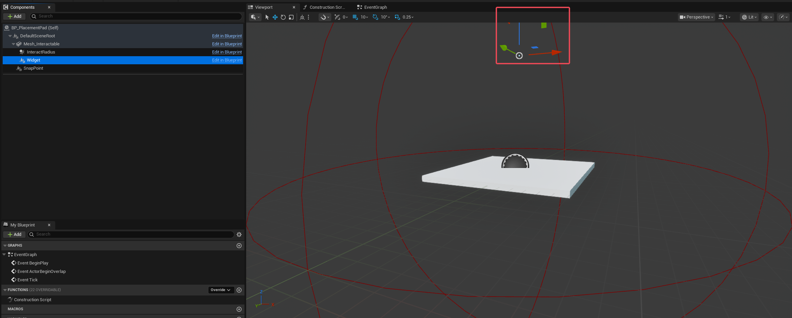
When the pad is hovered, the outline from Chapter A traces the edge of this flat square.
D1. Add a Snap Point
Add a Scene component named SnapPoint and drag it onto DefaultSceneRoot, not onto the mesh. This keeps the squashed scale off the box. Set its Location Z to about 28, so a snapped box rests on top of the pad instead of sinking into it.
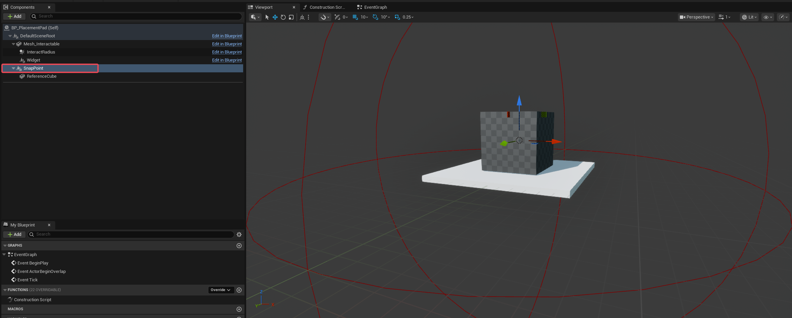
D2. Variables and Color
Add to BP_PlacementPad:
Key: E_PuzzleKey, Instance EditableSnappedBox: BP_PuzzleBox (Object Reference)bSolved: Boolean
Copy the Construction Script from B4 so the pad shows its key’s color.
Add an Event Dispatcher named OnPadChanged. The door listens to it in Chapter E.
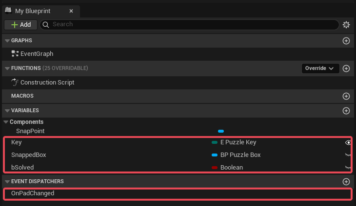
D3. Let the Box Point to Its Pad
Now that BP_PlacementPad exists, open BP_PuzzleBox and add a variable SnappedTo (BP_PlacementPad Object Reference).
At the very start of the box’s Event Interact (C5), insert Is Valid SnappedTo:
- Is Valid (the box is sitting on a pad): call
SnappedTo→ Interact, passingCharacterthrough. The pad handles it. - Is Not Valid: continue into the pickup logic from C5.
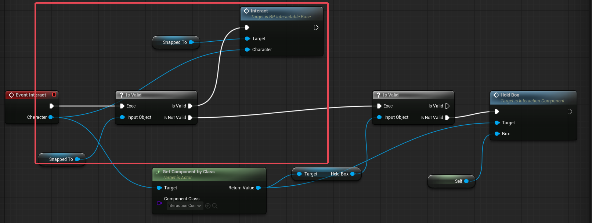
D4. Place and Take on Interact
In BP_PlacementPad, add Event Interact (override, as in C5).
Character → Get Component by Class (InteractionComponent). Then Is Valid SnappedBox:
Pad is empty (Is Not Valid) → Is Valid on the InteractionComponent’s HeldBox:
- Is Valid (player is carrying a box). Place it:
- Release Box on the InteractionComponent. Keep its returned
Box. - Call To Snapped on
Box, withSnapPointas the input - Set the box’s
SnappedToto Self - Set
SnappedBoxtoBox - Set
bSolvedto (Box→Key==Key) - Call OnPadChanged
- Release Box on the InteractionComponent. Keep its returned
Pad has a box (Is Valid) → Is Valid on the InteractionComponent’s HeldBox:
- Is Not Valid (hands empty). Give it back:
- Set
SnappedBox’sSnappedToto nothing - Call Hold Box on the InteractionComponent with
SnappedBox - Set
SnappedBoxto nothing - Set
bSolvedto false - Call OnPadChanged
- Set
- Is Valid (hands full and pad full): do nothing
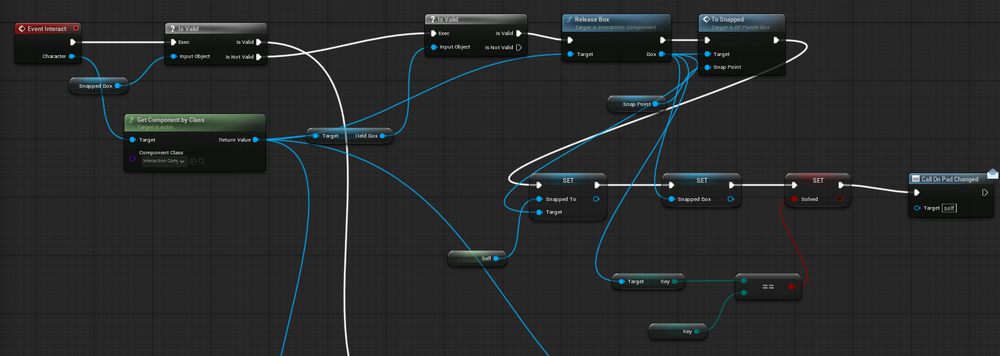
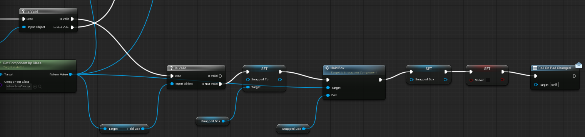
A wrong box still snaps on. The pad accepts it and quietly records bSolved = false. The player has to work out the right arrangement; the pad doesn’t tell them.
Why does the box forward Interact to its pad (D3)? When a box sits on a pad, the player naturally looks at the box, not at the strip of pad around it. Forwarding means pressing E on either one gives the box back.
Save All
Drag a red pad and a blue pad into the level and test it: carry a box over, look at the pad (outline and “E” appear even while holding), press E. Press E again to take it back.
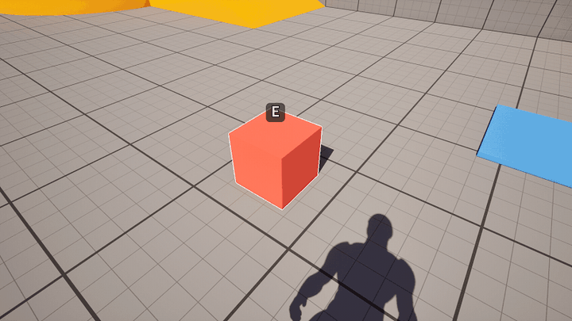
Chapter E: Open the Door
E0. Create the Door
Create a Blueprint → Actor named BP_PuzzleDoor. Add a Static Mesh named DoorMesh, set it to a cube, and scale it to 2, 0.2, 3 (two meters wide, three meters tall).
Add variables:
Pads: BP_PlacementPad, set to Array (click the icon next to the type), Instance EditableOpenOffset: Vector, Instance Editable, default0, 0, 300bAllSolved: Boolean
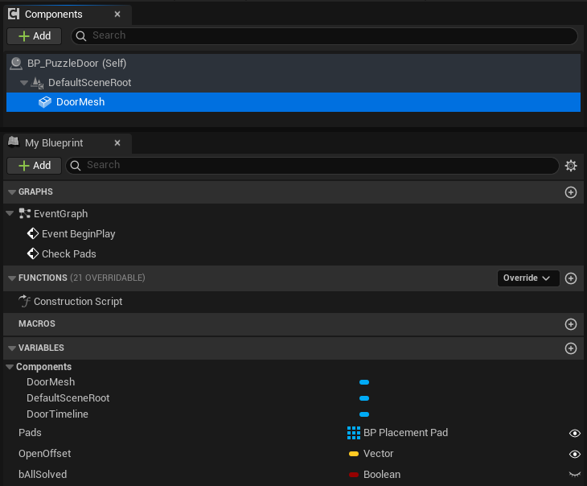
E1. Listen to the Pads
The door owns the list of pads, and the pads know nothing about the door. Each pad only announces that it changed, through OnPadChanged.
From Event BeginPlay: For Each Loop over Pads → from Array Element, add Bind Event to On Pad Changed. Drag from its red Event pin and choose Add Custom Event. Name it Check Pads.
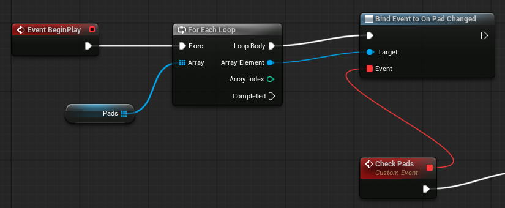
E2. Judge the Configuration
From Check Pads:
- Set
bAllSolved→ true - For Each Loop over
Pads. In Loop Body: SetbAllSolved→bAllSolvedAND Array Element’sbSolved - Completed → Branch on
bAllSolved
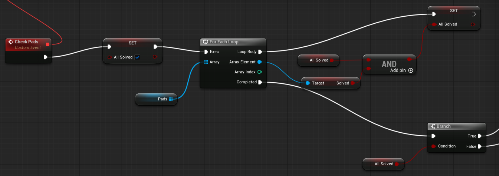
E3. Slide the Door
Right-click → Add Timeline. Name it DoorTimeline. Double-click it, add a Float Track named Alpha, and add two keys: (0, 0) and (1, 1). Set the length to 1.
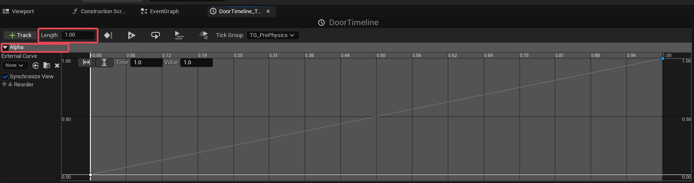
Wire the Branch’s True pin to the Timeline’s Play and False to Reverse.
From Update: DoorMesh → Set Relative Location, with New Location = Lerp (Vector) of A = 0, 0, 0, B = OpenOffset, Alpha = the Alpha track.
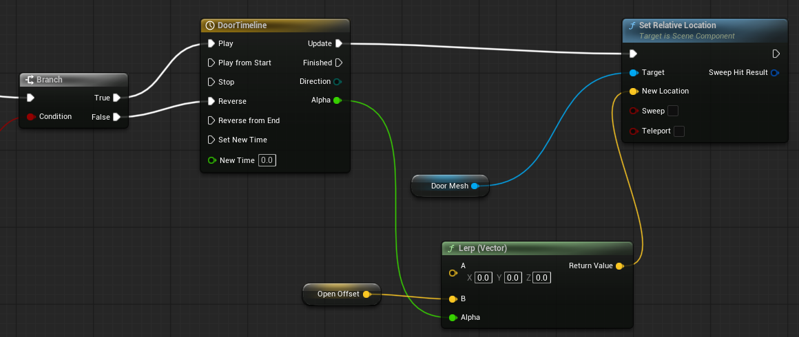
Play and Reverse both start from wherever the timeline currently is. Pull a box off mid-opening and the door turns around smoothly instead of snapping shut.
Save All
E4. Wire It Up in the Level
Drag BP_PuzzleDoor into a doorway. In its Details, click + on Pads twice. Use the eyedropper to pick your red pad and your blue pad from the level.
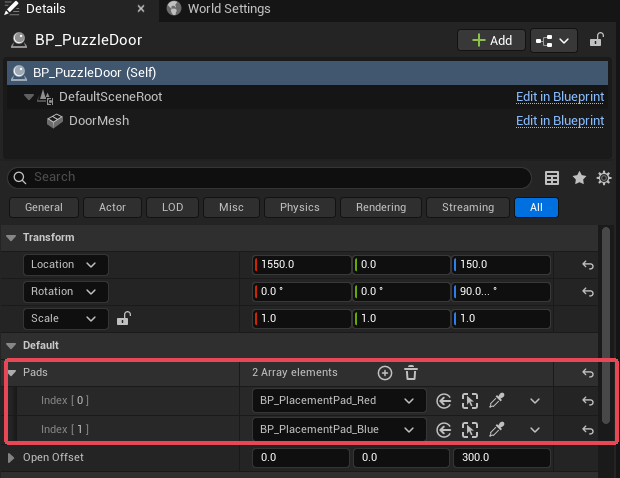
If the door opens the moment you press Play, its Pads array is empty. A loop over nothing never sets bAllSolved to false.
Test the whole puzzle. Try a wrong arrangement first, then the right one, then pull a box off.
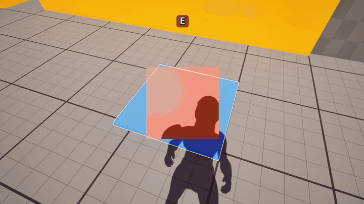
E5. Final Blueprint Structure
BP_Interactable_Base: On Hovered / On UnHovered:
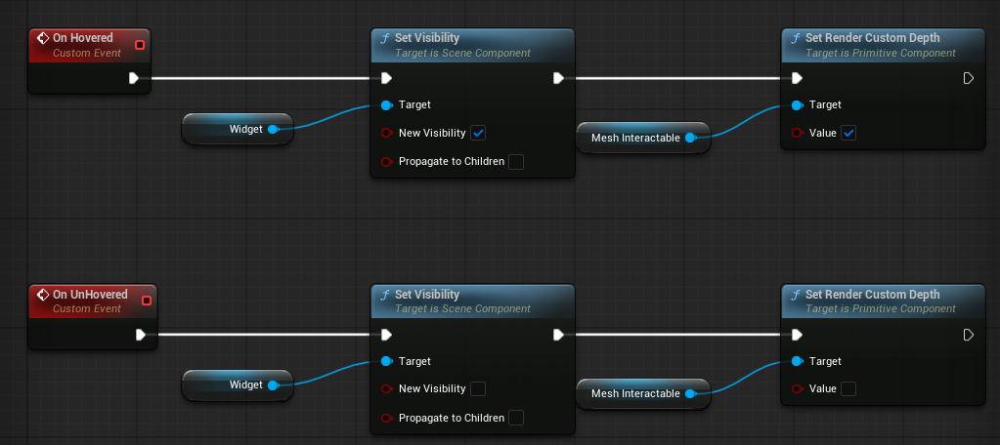
InteractionComponent: On Interactable Overlap, BeginPlay, Tick, E key:
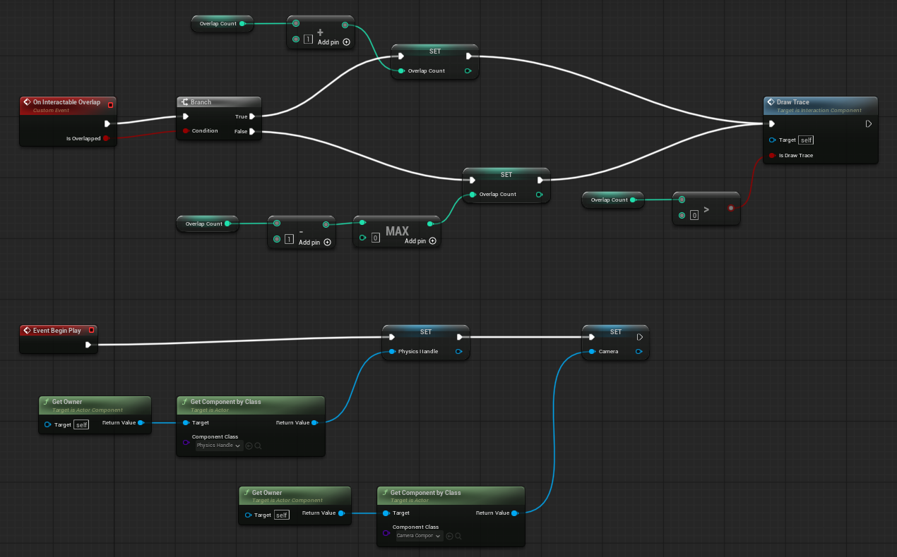
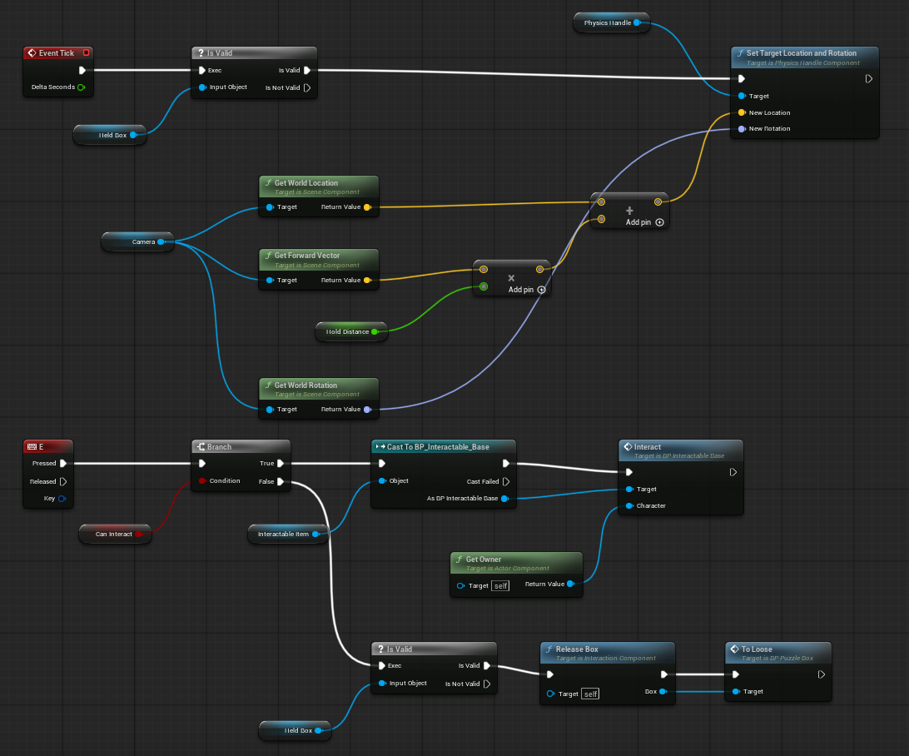
InteractionComponent: Hold Box, Release Box:
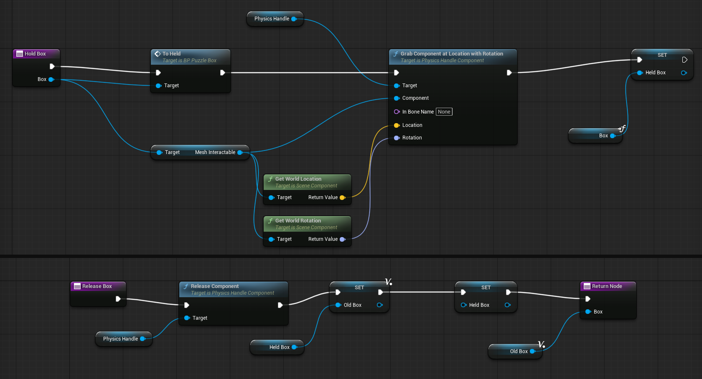
BP_PuzzleBox: Construction Script, state events, Event Interact:
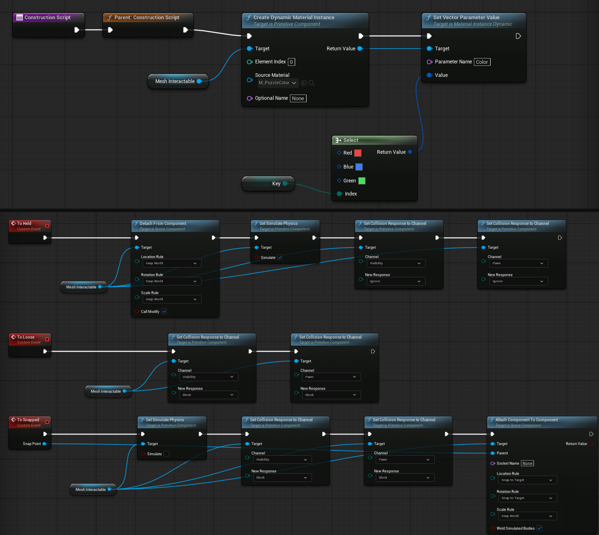
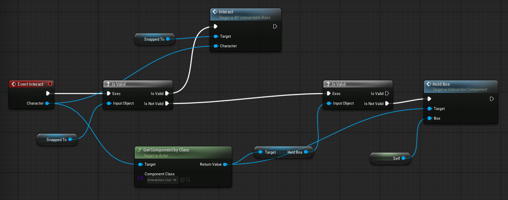
BP_PlacementPad: Event Interact:
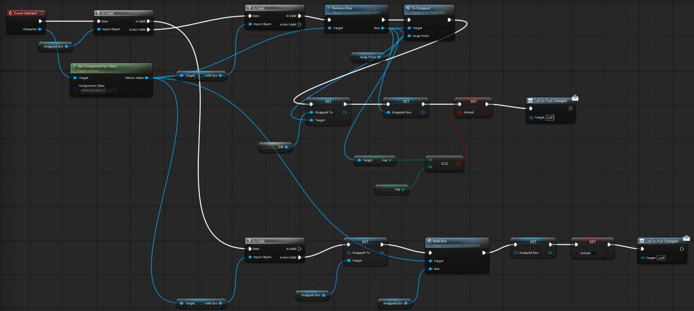
BP_PuzzleDoor: BeginPlay, Check Pads, Timeline:
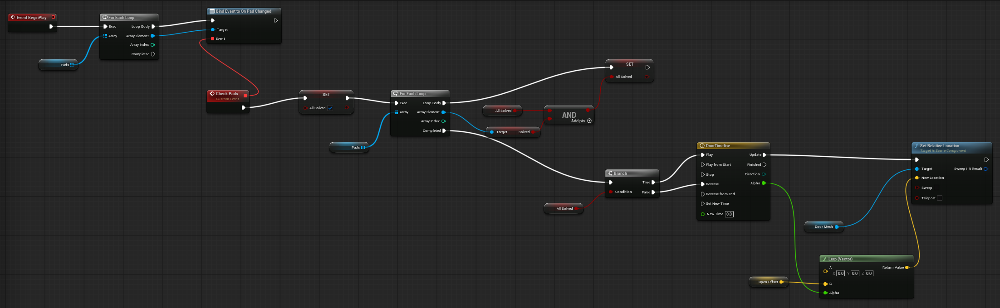
What you can now build
- An outline and “E” prompt on anything the player can interact with, inherited by every child of
BP_Interactable_Base - A physics object the player can pick up, carry, and drop, which collides with the world while held
- Pads that accept a carried object, snap it into place, and hand it back
- A key system that matches objects to slots without caring what the key looks like
- A door, or any other actor, that reacts to the state of several other actors through an Event Dispatcher
- A Timeline that plays forward and backward from wherever it currently is
Example deviations you are ready for
- Wrong-answer feedback: when a box snaps with
bSolvedfalse, flash the pad or play a buzz. - Swap: if the player is holding a box and the pad is full, trade the two instead of doing nothing.
- Stacking: give
BP_PuzzleBoxits ownSnapPointon top, so a box can act as a pad for another box. - Pressure plates: replace Interact on the pad with an overlap, so any physics object dropped on it counts.
- Weight puzzles: compare the box’s mass against a pad threshold instead of comparing keys.
- Order matters: have the door record which pad was solved in what order, and only open for one sequence.
- Other rewards: the door is just one listener. A light, a bridge, a sound, or a cutscene can bind to
OnPadChangedthe same way. - Win and lose screens: see the upcoming UI tutorial.
- Glowing pad VFX: coming in a later revision of this tutorial.